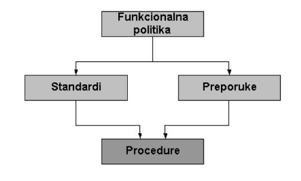

Dizajn sigurnih mreža
--Ivan Hrzica 14:20, 12. lipnja 2013. (CEST)
Dizajn Sigurnih Mreža
Uvod
"U 21. stoljeću skoro da i ne postoje poduzeća koja u svom poslovanju ne koriste račznala. Sama računala unutar poduzeća su međusobno povezana tvoreći računalnu mrežu. U početku se se računalne mreže upotrebljavale za razmjenu informacija između radnih stanica, dok u današnje vrijeme služe za više različitih i mnogo kompliciranijih aktivnosti poput distriburiranje aplikacija i baza podataka. Same aplikacije i baze podataka su instalirane na više poslužitelja koji se ne moraju nužno nalaziti na istoj lokaciji, a upravo nam računalna mreža omugućuje brzi dohvat informacija te na taj način moderniziraju poslovanje i stvaraju podlogu za daljni tehnološki napredak. Osim prednosti i poboljšanja, računalne mreže imaju i neke negativne strane, odnosno rizike. Uglavnom se odnose na prekid poslovanja, gubitak podataka, curenja informacija, gubitak ugleda i slicno. Kako bi smanjili mogućnost pojavljivanje takvih aktivnosti, računalne mreže je potrebno osigurati. Osiguranje računalnih mreža radi se od samog početka, tj. od faze idejnog dizajna računalne mreže, preko projekta pa sve do implementacije. Sami proces osiguranja nije jednokratni postupak već se provodi, kako je gore navedeno, u svim fazama razvoja, ali i tijekom cijelog života računalne mreže. Na taj način se na vrijeme može otkriti ranjivost i slabost računalne mreže te ukloniti potencijalna uska grla. Ovaj rad se bavi dizajnom sigurnih računalnih mreža. Cilj rada je prikazati način postavljanja standardnih mrežnih uređaja (usmjerivace, vatrozide i ostale) kako bi se stvorila računalna mreža koja ispunjava sve zahtjeve za osiguranje poslovanja neke organizacije. Poznavanje rada računalnih mreža te razumijevanje potreba korisnika je ključan faktor pri izradi odgovarajuće mrežne arhitekture i njenog dizajna. Kroz ovaj rad ćemo prikazati arhitektima i dizajnerima računalnih mreža prave korake te ukazati na moguće probleme i rješenja pri izradi sigurnih računalnih mreža."(Parafrazirano s [1])
--Josip Čanić 14:42, 12. lipnja 2013. (CEST)
Koraci izrade sigurnih mreža
Čitav proces dizajniranja sigurnih mreža smo raspodijelili u 12 koraka koji će nam pomoći da lakše i uspiješnije napravimo sigurnu mrežu. Koraci su:
1. Prepoznavanje mrežnih resursa
2. Analiziranje sigurnosnih rizika
3. Analiziranje sigurnosnih potreba i kompromisi
4. Izrada plana sigurnosti
5. Definiranje sigurnosne politike
6. Izrada procedura za primjenu sigurnosnih politika
7. Izrada strategije za tehničku implementaciju
8. Postići "buy-in" od korisnika, managera i tehničkog osoblja
9. Poduka korisnika, menagera i tehničkog osoblja
10. Provedba tehničke strategije i sigurnosne procedure
11. Testirati sigurnost i ažurirati eventualne probleme.
12. Održavanje sigurnosti'
Resursi imovine mogu biti mreže domaćini (operacijski sistem, aplikacije i podatci), uređaji za umrežavanje (kao što su usmjerivači i preklopnici), i mrežni podatci koji prolaze mrežom. Isto tako resursi mreža su i intelektualno vlasništvo, poslovne tajne te ugled pojedine tvrtke. Iako ti resursi nisu materijalni također su važni resursi. Vrlo je važno prepoznati sve resurse tvrtke kako ti isti ne bi bili zloupotrijebljeni ili sabotažirani. Ukoliko bi i došlo do sličnog u ovom koraku se moraju uzeti u obzir i eventualne posljedice te riješavanja tog problema.
2. Analiziranje sigurnosnih rizika
Postoji jako puno različitih vrsta rizika koje prijete sigurnosti mreža. Iako odmah pomislimo na različite viruse koje nam mogu zaprijetiti moramo znati da je neiskusna osoba također rizik jer je upravo ona ta koja svojim neznanjem skida sa interneta aplikacije koje sadrže različite vriuse. Takvi "uljezi" mogu ukrasti podatke, promijeniti ih ili uskratiti određene usluge postojećim korisnicima. "Denial-of-service" (DoS) napadi su postali sve češći u posljednjih nekoliko godina. Učinkovita sigurnosna strategija mora zadovoljiti pet osnovnih elemenata sigurnosti:
• Povjerljivost – podacima koji se prenose mogu pristupiti samo ovlaštene osobe, • Autentikacija – proces provjere identiteta izvora i odredišta, •Neporecivost – dokaz prijenosa i primitka podataka •Kontrola pristupa – dozvola ili zabrana pristupa temeljena na parametrima koji uključuju identitet izvora i odredišta
Dobro osmišljen sigurnosni model računalne mreže omogućuje sigurnosnoj zajednici (profesionalcima koji se bave uspostavom sigurnosti informacijskih sustava) metode istraživanja, primjene i održavanja mrežne sigurnosti koja se može primijeniti na bilo koju mrežu. Kod istraživanja može se koristiti kao alat za analizu mrežne sigurnosti podjelom po slojevima. Prilikom postavljanja mrežne sigurnosti, model se može iskoristiti za stvaranje mrežne arhitekture koja će osigurati da nisu propušteni važni detalji sigurnosnih mjera. U smislu održavanja postojećih mreža može se koristiti za razvoj rasporeda pregleda sigurnosnih mjera. Također može se upotrijebiti za otkrivanje neovlaštenih provala te za smanjivanje mogućnosti da se oni ponovno pojave.
3. Analiziranje sigurnosnih potreba i kompromisa
Iako mnogi korisnici imaju više specifičnih ciljeva, u većini se sigurnosni uvijeti svode na potrebu zaštite slijedeće imovine: Tajnost podataka : samo ovlašteni korisnici mogu vidjeti važne informacije Integritet podataka : samo ovlašteni koristnici mogu mijenjati te iste informacije Sustav i dostupnost podataka : nesmetan pristup važnim računalnim resursima Kao što je slučaj sa većinom tehničkim potrebama dizajna, kako bi postigli sigurnosne ciljeve nužno je napraviti neke ustupke. Ustupci moraju biti napravljeni u pogledu sigurnosnih ciljeva i ciljeva za priuštivost, upotrebljivost, izvedbu te dostupnost. Ovdje je uz sigurnost moramo pridodati i količinu rada managementa jer se login ID-s, lozinke i dnevne revizije moraju održavati.
Sigurnost je također utječe na performanse mreže. Sigurnosne značajke kao što su paketi filtera i šifriranje podataka koriste procesor i memoriju na local hostu, ruterima i serveru. Šifriranje može koristiti više od 15 posto raspoložive procesorske snage na ruteru ili poslužitelju. Šifriranje se ne mora provoditi na zajedničkim ruterima i poslužiteljima već na posebnim uređajima, no još uvijek bi utjecali na performanse mreže zbog kašnjenja koji paket doživljava prilikom enkripcije ili dekripcije. Sigurnost može smanjiti i mrežnu redundanciju (zalihost). Ako sav promet mora proći kroz uređaj za šifriranje, tada on postaje jedinstvena točka ispada. Neki sigurnosni mehanizmi zahtijevaju da se promet uvijek odvija po istom putu kako bi se rasporedio ravnomjerno. Naprimjer, mehanizam koji nasumično radi TCP slijed brojeva (kako hakeri ne bi mogli pogoditi ih), neće raditi ako neki segmenti TCP-a za sesiju uzmu put koji zaobilazi randomizirajuču funkciju zbog balansiranja pokretanja.
4. Izrada plana sigurnosti
Jedan od prvih koraka dizajniranja sigurnosti je izrada plana sigurnosti. Sigurnosni plan je visoko klasificiran i tajni dokument koji predlaže što organizacija treba napraviti kako bi se zadovoljili sigurnosni zahtjevi. Plan određuje vrijeme, ljude i druge resurse koji će biti potrebni za razvoj sigurnosne politike i pri provedbi tehničke implementacije. Kao dizajner mreže potrebno je plan napraviti tako da bude praktičan i prigodan. Plan bi trebao biti utemeljen prema klijentovim ciljevima i analizom mrežne imovine te rizicima. Plan sigurnosti mora sadržavati topologiju mreže i popis mrežnih usluga koje će biti osigurane( npr. FTP, web, e-mail, itd.). Ovaj popis bi trebao odrediti tko pruža usluge, tko ima pristup servisima, kako je pristup osiguran te tko je administrator usluga.
Kao dizajner mreže možemo pomoći kupcu pri određivanju koje usluge su mu potrebne prema njegovom biznisu i tehničkim ciljevima. Ponekad se neke usluge dodavaju nepotrebno, u večini slučajeva zato što su najnoviji trend. Pri dodavanju novih usluga moguće je da će nam trebati novi paket filtera na ruterima i vatrozidu kako bi ih zaštitili. Ako ne sa njima onda sa dodatnom autentikacijom korisnika kako bi se limitirao pristup uslugama te napravila složenija strategija sigurnosti. Isto tako prekompleksna strategija sigurnosti bi se trebala izbjegavati jer ih je jako teško provesti bez da napravimo neočekivane rupe u sigurnosti. Jedan od glavnih spekata sigurnosnog plana je specifikacija ljudi koji će biti uključeni u provedbu mrežne sigurnosti: Da li će se zaposliti sigurnosni administratori? Kako će "end-user" (kupac) i njegovi menageri biti uključeni u to? Kako će se kupac, manageri, i tehničko osoblje trenirati vezano uz sigurnosne police i procedure? Kako bi sigurnosni plan bio koristan on mora imati korisničku podršku na svim razinama zaposlenih. Naručito je važno da menagement poduzeća podupire sigurnosni plan.
"(Parafrazirano s [1])
5. Definiranje sigurnosne politike
Budući je sigurnost informacijskih sustava danas vrlo bitan element poslovanja mnogih kompanija, važno je unaprijed osmisliti na koji način se sustav planira zaštititi od potencijalnih prijetnji. Temeljitim proučavanjem sustava od strane kvalificiranih i stručnih osoba procjenjuju se rizici i otkrivaju prijetnje sustavu. Nakon procijene sigurnosti sustava treba definirati sigurnosnu politiku u kojoj je potrebno detaljno opisati što sve treba zaštititi kako bi sustav imao željenu razinu sigurnosti. Sigurnosna politika može se definirati na dva načina. Prvi način je kopiranje već postojeće sigurnosne politike, tj. implementiranjem jedne od normi. Ovaj način prikladan je za kompanije koje nemaju dostatna sredstva za detaljnom sigurnosnom politikom niti imaju za njom potrebu. Po potrebi je moguće iz odabrane norme izbaciti pojedine dijelove politike ili kombiniranjem dviju ili više normi osmisliti potrebnu sigurnosnu politiku. Drugi način definiranja sigurnosne politike je detaljno proučavanje informacijskog sustava, uočavanje njegovih potencijalnih mjesta napada, odluka na koji način će se ona zaštiti i testiranje cjelokupne sigurnosti sustava. Ovako definirana sigurnosna politika pruža puno veću sigurnost, ali zbog toga ima i puno veću cijenu. Pri definiranju sigurnosne politike na ovakav način svakom informacijskom sustavu pristupa se individualno, angažiranjem velikog broja stručnjaka i ulaganjem velikih sredstava ne samo u njeno definiranje, već i da se jednom definirana politika implementira, održava i provodi. Iako početna velika ulaganja mnoge odvraća, ovako definirana sigurnosna politika osigurava kompanijama nesmetano poslovanje i visok stupanj sigurnosti što je dugoročno gledano svakako isplativa investicija.
"(Parafrazirano s [1])
6. Izrada procedura za primjenu sigurnosnih politika
Sigurnosne postupke provode sigurnosne politike. Procedure definiraju konfiguracije, prijave, reviziju i proces održavanja. Sigurnosni postupci trebaju biti napisani za krajnje korisnike, mrežne administratore i administratore sigurnosti. Sigurnosne procedure bi trebale odrediti kako se nositi sa različitim incidentima (koji su, što učiniti i kome se obratiti ako se otkrije upad).
 Slika: Povezanost politika, standarda, preporuka i procedura
{kind=link}
Izvor slike: [[1]]
Politike definiraju smjer u kojem je potrebno razvijati informacijsku sigurnost. Konkretna implementacija sigurnosnih politika temelji se na skupu preporuka i procedura koje detaljno definiraju način na koji će se ostvariti sigurnost pojedinog elementa informacijskog sustava, uvažavajući pri tome postojeće standarde. Ponekad je kroz same sigurnosne politike teško osiguranti interoperabilnost pojedinih elemenata informacijskog sustava. Zbog toga se određuju standardi koji služe kao temelj za izradu detaljnih procedura za implementaicju sigurnosti infromacijskog sustava. Procedure predstavljaju posljednji korak u implementaciji organizacijske sigurnosti. One egzaktno opisuju na koji način je potrebno implementirati postojeće standarde i preporuke za svaki bitni element informacijskog sustava.
7. Izrada strategije za tehničku implementaciju
U izradu strategije za tehničku implementaciju ulaze svi segmenti potrebni kako bi se osigurala adekvatna tehnička implementacija svih potrebnih uređaja.
8. Postići "buy-in" od korisnika, managera i tehničkog osoblja
Postizanje "buy-in" od korisnika, menagera i tehničkog osoblja.
9. Poduka korisnika, menagera i tehničkog osoblja
Loše podučeni korisnici, menageri i tehničko osoblje mogu biti veliki rizik u sigurnosti mreža. Potrebno je educirati sve ljude koji će koristiti mrežu kako ne bi došlo do neželjenih propusta u sigurnosti.
10. Provedba tehničke strategije i sigurnosne procedure
Provedba definiranih sigurnosnih politika i procedura te tehničke strategije koja je utvrđena u koracima prije.
11. Testirati sigurnost i ažurirati eventualne probleme
Testiranje kompletne sastavljene mreže. Provjera i sanacija eventualnih problema.
12. Održavanje sigurnosti
Sigurnosni testovi, ažuriranje sigurnosnog plana i politike, čitanje najnovije literature, organizirani periodicne provjere sigurnosti mreže pomažu pri održavanju mreže sigurnom. Sigurnost mreže mora biti konstantno provjeravana kako bi se održala sigurnom. Kako se rizici tijekom vremena mijenjaju tako bi se trebala mijenjati i sigurnost. Tako stručnjaci za sigurnost nalažu da je implementacija, testiranje, nadgledanje i poboljšanje sigurnosti proces koji nema kraja. Oni ga zovu "security wheel" jer konstantno ažuriranje sigurnosnih mehanizama kako bi obranili poslijednje napade im izgleda poput hrčka koji cijelo vrijeme trči u kotaču.
{kind=link}
Izvor slike: [[2]]
--Ivan Hrzica 14:17, 12. lipnja 2013. (CEST)
Segmentacija mreže
Prilikom dizajniranja sigurnih mreža vrlo je važno poznavati računalnu mrežu i mrežne uređaje kako bi se pravilno oblikovala mreža koja će omogučiti maksimalnu sigurnost . Segmentaciju računalne mreže je važno provesti kako bi se segmentirala veća mreža na manje podmreže i tako se poboljšala performansa mreže i njena sigurnost. U nastavku su navedeni uređaji koji provode segmentaciju mreže i mrežni segmenti koji se koriste za oblikovanje odnosno dizajn sigurnih računalnih mreža.
--Mateja Sučić 12:15, 12. lipnja 2013. (CEST)
Mrežni uređaji
Mrežni uređaji ( eng. Networking Devices) su jedna od komponenti mrežnog sustava. To su uređaji koji povezuju dva ili više računala u nekoj računalnoj mreži te omogućuju komunikaciju između njih. .
{kind=link}
Izvor slike : [3]
Mostovi / Premosnici
Most (eng. bridge)i kao što sam naziv opisuje, most je spojni uređaj koji povezuje dva dijela iste mreže. On u „svojoj“ lokalnoj mreži (LAN) sadrži tablicu u kojoj se nalaze adrese računala koje on konstantno provjerava, prosljeđuje te ih izdvaja ukoliko adrese odredišta odgovaraju adresama navedenih u postojećoj tablici te mreže. Ukoliko ne odgovaraju , skup tih podataka se prosljeđuje mostu na vanjskoj mreži.
Usmjerenici
Usmjerenik (eng. router) je spojni uređaj koji povezuje više mreža i obavljaju funkciju trećeg sloja OSI referetnog modela. Njegova funkcija je da pregleda pakete te da ih prenese iz jedne mreže u drugu. Pakete pregledava na način da provjere njihovo zaglavlje te ovisno o odredišnoj IP adresi paket šalju u odgovarajuću mrežu. Usmjerenik djeluje kao obrambeni zid ( eng. firewall) jer može mrežu obraniti od nekih štetnih, njemu nepoznatih podataka. Imaju i mogučnost preusmjerenja podataka ukoliko dođe do nekog kvara na mreži.
Preklopnici
Preklopnici (eng. switch) su spojni uređaji koji povezuju više mrežnih uređaja. Preklopnici kao i mostovi segmentiraju mrežu na drugom sloju OSI/ISO 7-segmentnog modela. Njihova je uloga da zapamte MAC adresu mrežnih uređaja i pri svakom spajanju računala i spajanju njegove veze s drugim računalom , preklopnik pamti njegovu MAP adresu i poveže ga s vratima na koje je računalo spojeno.
Pristupnik
Pristupnik ( engl. gateway) funkcionira isto kao i usmjerivač. To je mrežni uređaj koji povezuje druge mreže koje koriste drugačije protokole. Njegova uloga je da uspostavi vezu s drugim uređajima koji se nalaze na lokalnim ali i izvan lokalnih mreža.
Vatrozid
Pojam vatrozid
VATROZID (eng.firewall ) je mrežni uređaj čija je uloga stvoriti sigurnosnu zonu od mogućih napada na mrežu. Zaštitu omogućuje filtriranjem mrežnog prometa. Vatrozid se obično nalazi između dvije mrežne zone gdje kao sigurnosna stijena čuva te mreže.
{kind=link}
Izvor slike : [4]
Vrste i podjela vatrozida
Postoje više vrsta vatrozida. Vatrozid može biti realiziran kao sklopovlje ili kao programsko rješenje. Postoje dva različita tipa vatrozida :
1.S obzirom na okruženje u kojem funkcioniraju a) osobni vatrozid koji je namjenjen zaštiti jednog računala b) mrežni vatrozid koji je namjenjen čitavoj mreži računala.
2. S obzirom na kojoj razini OSI modela se vrši inspekcija prometa a)Paketni filtari. b)Aplikacijski vatrozidi
Paketni filteri
Paketni filteri (eng. Packet filtering firewall) provode filtriranje prometa na trečem (mrežnom) i četvrtom (transportnom) sloju OSI referentnog modela. Vatrozid pregledava sve ulazne pakete i na temelju određenih informacija donosi odluku da li dopustiti ili odbiti mrežni promet. Paketni filteri pregledavaju : • izvorišne i odredišne IP adrese • Protokol, poput protokola kontrole prijenosa (TCP), protokola korisničkog datograma (UDP) ili protokola Internetske kontrolne poruke (ICMP) • Izvorišni i odredišni portovi, ICMP tipovi i kodovi • Zastavice u TCP zaglavlju, na primjer, je li paket zahtjev za povezivanjem • Smjer (ulazni ili izlazni) • Fizičko sučelje kojim paket putuje (prevedeno s [:http://pic.dhe.ibm.com/infocenter/iseries/v6r1m0/index.jsp?topic=/rzaji/rzatjpacketff.htm]
'Aplikacijski vatrozidi
Aplikacijski vatrozidi (engl. Apllication Wirefall) provode zaštitu na sedmom (aplikacijskom) sloju ISO-OSI modela. Oni imaju direktan uvid u sadržaj poruke i tako mogu vidjeti o kakvom je sadržaju riječ. Ukoliko vatrozid uoči neki neželjeni sadržaj ( virusa, trojanac) on ga blokira i spriječi daljni protok .
Tehnologije
Postoje tehnologije koje se koriste uz vatrozide. To su proxy poslužitelji i prevođenje mrežnih adresa
Proxy poslužitelj
Proxy poslužitelj je posrednih između Interneta i web preglednika. Proxy poslužitelji se koriste u razne svrhe kao što su: 1. anonimnost klijentskih računala tj. krajnjih korisnika, 2. ubrzanje pristupa resursima upotrebom metode privremene pohrane (eng. caching) 3. zabrana pristupa određenim web stranicama, 4. zabrana pristupa web stranicama s određenim ključnim riječima, 5. zabrana određenih protokola, 6. zabrana pristupa određenim priključcima (eng. ports), 7. zabrana pristupa određenih korisnika proxy poslužitelju, 8. praćenje korisnikovih zahtjeva, 9. zaobilaženje zabrana pristupa, 10. pretraživanje sadržaja koji se prenosi ili 11. uklanjanje dijelova web stranice poput reklama
(preuzeto s :http://www.cert.hr/sites/default/files/NCERT-PUBDOC-2010-08-309.pdf])
Prevođenje mrežnih adresa
„Prevođenje mrežnih adresa se koristi za zaštitu identiteta računala u mreži.“ [5] Adrese se prevode na način da se paketima koji se šalju iz unutarnje mreže promjeni privatnu adresa u javnu. Prevođenje mrežnih adresa ima neke prednosti i nedostatke. Neke od prednosti su što omogućuje spremanje javnih IP adresa te skriva IP adrese privatnih mreža te omogućuje jednostavna usmjerenja i pristupa mreži. Neke od nedostatka su to što nisu toliko spretni u otkrivanju i sprječavanju napada kao proxy poslužitelji te mogu otežati ili prekinuti rad same aplikacije. [prevedeno s : http://pic.dhe.ibm.com/infocenter/iseries/v6r1m0/index.jsp?topic=/rzaji/rzatjicnat.htm ]
--Mateja Sučić 12:45, 12. lipnja 2013. (CEST)
OSI REFERENTNI MODEL
Segmentiranje mreže se provodi uz pomoć spojnih uređaja ( mostova, usmjerivača i preklopnika) koji segmentiraju mrežu na tri donja sloja po OSI/referentnom modelu. U nastavku ću prikazati OSI/ISO 7-segmentnom model i objasniti ga.
{kind=link}
Izvor slike [6]
OSI referentni model (eng. Open Systems Interconnection Basic Reference Model) je mrežni model koji dijeli arhitekturu mreže u sedam logičkih razina. Prikazuje radnje koje se zbivaju na različitim slojevima mreže te prikazuje kretanje informacija u mreži. Prema OSI modelu stručnjaci razvijaju računalne mreže i protokole ( skup pravila za prijenos podataka putem mreže). Sedam slojeva OSI referentnog modela su: 1. Aplikacijski sloj 2. Prezentacijski sloj 3. Sloj sesije 4. Transportni sloj 5. Mrežni sloj 6. Podatkovni sloj 7. Fizički sloj
{kind=link}
Izvor slike [7]
Aplikacijski sloj
Aplikacijski sloj je najbliži korisniku. On pruža mrežne usluge aplikacijama (programima) i upućuje zahtjev za uslugama prezentacijskog sloja. Primjeri protokola na ovom sloju su: HTTP, FTP, Telenet, SMTP, NNTP
Prezentacijski sloj
Prezentacijski sloj se koristi za enkriptiranje i kodiranje podataka na računalima.
Sloj sesije
Sloj sesije nudi uspostavljanje i sinkronizaciju veze između korisnika.
Transportni sloj
Transportni sloj se odnosi na pakete koji putuju između dva računala. TCP je jedan od protokola koji daje mogućnost ponovnog slanja paketa koji se zagubio dok UDP je protokol koji se koristi za brzinu komunikacije.
Mrežni sloj
Mrežni sloj je treći sloj ISO modela gdje usmjerenik ( engl.router) usmjeruje pakete iz jedne mreže u drugu i koji ima mogučnost filtriranja i upravljanja mrežnim prometom pa stoga mogu spriječiti moguće napade.
Podatkovni sloj
Podatkovni sloj je drugi sloj ISO modela koji vrši odvajanje komunikacijskih uređaja koji su povezani na isti preklopnik, čime se povečava sigurnost od mogućeg prisluškivanja i tehničkih smetnji.
Fizički sloj
Fizički sloj je najniža rizina ISO modela u kojoj je segmentacija mreže transparenta . Tu se definiraju električna i fizička svojstva mrežnih uređaja.
Prepričano s : [8]
--Mateja Sučić 13:46, 12. lipnja 2013. (CEST)
Detekcija i prevencija upada iz mreže
Sustav za detekciju upada (eng. Intrusion Detection Systems, IDS) je obrambeni sustav čija je osnovna zadaća otkrivanje neprijateljske (nepoželjne) aktivnosti na mreži. IDS pruža mogućnost prikupljanja informacija putem određenih tehnik te upotrebe informacija o poznatim vrstama napada. Te informacije su nam korisne za učvršćivanje naše mrežne sigurnosti, ali i kao dokaz za pravno gonjenje počinitelja napada. Ukratko, detekcija upada jest proces koji obuhvaća identificiranje i reagiranje na zlonamjerne aktivnosti usmjerenih prema računalu ili nekom od mrežnih resursa.
Otkrivanje neovlaštenog upada i njegova prevencija
Predstavlja proces nadziranja aktivnosti u računalnom sustavu ili mreži te analiziranje incidenata poput povrede računalne sigurnosne politike ili stanradne sigurnosne prakse. Postoji više vrsta incidenata, kao što su maiciozni virusti (npr. crv, spyware), neovlašten pristup sustavu, zloupotrebljavanje privilegija ili pokušaj ostvarivanja dodatnih pogodnosti od strane ovlaštenih korisnika sustava. Incidenti ne moraju nužno biti zlonamjerni, na primjer slučajno pogriješimo pri unosu adrese računala te se spojimo na tuđi sustav bez odobrenja. Sustav za otkrivanje upada engl. Intrusion Detection System (IDS) je softver koji automatizira proces za otkrivanje upada, a sustav za prevenciju upada engl. Intrusion Prevention System (IPS) je softver koji ima sve mogućnosti sustava za otkrivanje upada, ali ima i mogućnost da pokuša zaustaviti moguće incidente.
Koristi IDPS tehnologije
"IDPS tehnologija se bazira na identificiranju mogućih incidenata. Na primjer, IDPS može otkriti kada je napadač uspješno ugrozio sustav iskorištavanjem ranjivosti u njemu. IDPS zatim prijavljuje taj incident administratorima koji se brinu za sigurnost sustava, koji zatim brzo pokreću određene akcije da minimiziraju i smanje štetu koja je nastala zbog incidenta. Ako je IDPS uspješno spriječio napad, administrator koji se brine za sigurnost bi i dalje trebao saznati za napad i biti obaviješten o njemu. Ovo je posebni važno ako cilj napada ima poznatu slabost koju je napadač mogao iskoristiti. Napadač je mogao potencijalno koristiti različite napade za tu ranjivost koju IDPS možda ne bi mogao prepoznati, stoga je bitno da o svemu bude obaviješten i uključen u rad administrator koji se brine za sigurnost. Mnoge IDPS tehnologije mogu biti konfigurirane za prepoznavanje kršenja sigurnosne politike. Na primjer, neki IDPS mogu biti konfigurirani sa skupom pravila za postavke firewall-a dopuštajući im da identificiraju mrežni promet koji krši pravila sigurnosne politike, dok neke IDPS mogu pratiti prijenos datoteka i identificirati one koje bi mogle biti sumnjive, kao što je recimo kopiranje velike baze podataka na računalo korisnika. IDPS osim za otkrivanje mogućih incidenata može poslužiti i za druge koristi:
• Identificiranje problema sigurnosne politike o IDPS može pružiti određeni stupanj kontrole kvalitete, kao što je dupliciranje postavka firewall-a te upozoravanje korisnika kada vidi da mrežni protokol koji je trebao biti blokiran od strane firewall-a nije zbog pogreška konfiguracija.
• Dokumentiranje postojeće prijetnje organizaciji o IDPS tehnologije sadrže dnevnik informacija o prijetnjama koje su otkrili. Razumijevanje učestalosti i karakteristike napada na računalne resurse organizacije je korisno zbog identificiranja odgovarajućih sigurnosnih mjera za zaštitu resursa. Informacije se također mogu koristiti za educiranje menadžmenta o prijetnjama s kojima se organizacija suočava.
• Odvraćanje pojedinaca od kršenja sigurnosne politike o Ako su pojedinci svjesni da su njihove akcije pod nadzorom IDPS tehnologije zbog sigurnosnih razloga, manje je vjerojatno da će počiniti povrede zbog rizika većeg rizika otkrivanja." Citirano s : [9]
Ključne funkcije IDPS tehnologija
"Sve vrste IDPS tehnologije obavljaju iduće ključne funkcije:
• Snimanje informacije vezane za promatrane događaje o Informacija se obično snima lokalno, a može biti poslana na različite odvojene sustave.
• Obavještavanje administratora koji se brine za sigurnost o važnim promatranim događajima o Upozorenja putem e-mail, stranice, poruke na IDPS sučelju korisnika koja se sastoje od osnovnih informacija o događaju, a za više informacija administrator treba pristupiti IDPS-u.
• Izrada izvješća o Kratak sadržaj o događajima koje smo pratili.
IPS tehnologije se razlikuju od IDS tehnologija po tome što IPS tehnologije mogu nakon otkrivanja prijetnje pokušati istoimenu i spriječiti uz pomoć nekoliko odgovarajućih tehnika koje se dijele u sljedeće skupine:
• IPS sam zaustavlja napad o IPS može zaustaviti napad na jedan od sljedećih načina: - Prekinuti konekciju mreže - Blokirati pristup cilju ili neke druge vjerojatne mete - Blokirati sve pristupe host-u, servisima, aplikacijama ili drugim resursima
• IPS mijenja sigurnosno okruženje o IPS bi mogao promijeniti konfiguraciju ostalih sigurnosnih kontrola kako bi omeo napad.
• IPS mijenja napadačev sadržaj o Neke IPS tehnologije mogu ukloniti ili zamijeniti maliciozne dijelove " Citirano s : [10]
Komponente sustava za detekciju i prevenciju upada
"Komponente sustava su:
1. Senzori (eng. Sensor) Prate i analiziraju aktivnost na mreži. Također se upotrebljava izraz „Agent“ za uređaje u računalnoj mreži s IDPS-om.
2. Server za upravljanje (eng. Management server) Centralizirani uređaj koji prima podatke od senzora i upravlja dobivenim podacima. Kod nekih tipova senzora nije potreban server za upravljanje već administrator direktno upravlja na temelju dobivenih informacija.
3. Server za bazu podataka (eng. Database server) Služi kao arhiva podataka o događajima (eng. Event information).
4. Konzola (eng. Console) Program preko čijeg sučelja administratori i korisnici konfiguriraju senzore, ažuriraju softver te prate i analiziraju događaje." Citirano s : [11]
{kind=link}
Izvor slike [12]
![[12]](http://security.foi.hr/wiki/index.php/Datoteka:Komponente.jpg){kind=link}
Mogućnosti zaštite
"Mogućnosti zaštite koje pruža IDPS su sljedeće:
Prikupljanje podataka (eng. Information gathering)
Bilježenje aktivnosti (eng. Logging)
Detekcija (eng. Detection)
Prevencija (eng. Prevention)
Prikupljanje podataka
Prikupljaju se podaci o događajima na uređajima „domaćinima“ (eng. Hosts) i mrežama.
Bilježenje aktivnosti
Sustavi za detekciju i prevenciju upada kronološki bilježe svaku aktivnost radi istrage incidenata, analiziranja i uspoređivanja s ostalim izvorima logova. Logovi sadrže informacije kao što su vrijeme i datum, tip događaja, prioritet događaja i akcije koje su provedene na temelju događaja. Logovi bi trebali biti spremljeni lokalno i centralno kako bi se osigurao integritet i pristupačnost podacima.
Detekcija
Postoji mnogo tehnika za detekciju upada. Neke od njih su:
1. Pragovi (eng. Thresholds) Odnosi se na postavljanje granice za normalnu i abnormalnu aktivnost. Za prag se određuje maksimalno prihvatljiva razina normalnog ponašanja kao što je to na primjer dopušteno x pokušaja spajanja na mrežu ili dozvoljen broj znakova u imenu datoteke.
2. Crne i bijele liste Crne liste sadrže popis entiteta koje se povezuje s malicioznim aktivnostima (aplikacije, korisnička imena, linkovi, imena datoteka, ekstenzije, …), a služe kako bi ih sustav prepoznao kao prijetnju i blokirao aktivnosti vezane uz taj entitet ili postavio veću razinu uzbune. Bijele liste sadrže entitete koji su označeni kao dobroćudni kako bi se ignorirale uzbune povezane s njima.
3.Postavke uzbuna Većina IDPS tehnologija između ostalog dozvoljava administratorima da uključuju/isključuju uzbune, postavljaju zadanu (eng. Default) razinu uzbune te koje informacije trebaju biti zabilježene i kojim putem treba poslati obavijest (e-mail, mobitel, pager, …).
4.Pregledavanje i editiranje koda
Pregledavanje koda generiranog tijekom detekcije omogućuje analitičarima da odrede zašto su se neke uzbune generirale te da li su one opravdane.
Također, editiranjem koda se omogućuje prilagođavanje detekcije potrebama organizacije.
Prevencija
Sustavi za detekciju i prevenciju omogućuju administratorima prilagođavanje postavki prevencije kako bi imali mogućnost odrediti postupke prevencije za svaku razinu uzbune."Citirano s : [13]
IDS ALATI
"U današnje vrijeme postoji niz alata koji se koriste za detekciju upada u sustav. Uz te alate je poželjno nadodati i bazu podataka kako bi IDS mogao pohraniti određene informacije vezane uz upade.
Besplatni IDS proizvodi
Postoji čitav niz besplatnih alata koji se razlikuju po svojoj složenosti, funkciji, platformskoj ovisnosti…
• Snort (Windows, Linux, Mac)
• HenWen (Mac)
• Open Source Host-based Intrusion Detection System (Windows, Linux, Mac)
• Prelude (Linux)
• AIDE
• Ethereal
• SnoopNetCop Standars
• Tripwire
• Samhain – File Integrity
Komercijalni IDS proizvodi
Besplatni IDS proizvodi zahtijevaju osoblje s puno znanja i iskustva Prednosti koje nose komercijalni proizvodi su:
• automatizirani (korisnički orijentirani)
• generiraju preglednija izvješća
• praktičniji
• jednostavnija instalacija i upotreba
Neki od komercijalnih IDS proizvoda su:
• Cisco secure IDS • Cyclops
• Dragon Sensor
• NetDetector"
Parafrazirano s : [14]
IDS u praksi
WinDump/ Tcpdump
"Alat koji služi za analizu mrežnih paketa(WinDump za Windows verziju, odnosno , Tcpdump za Linux verziju). Zadaća programa je presretanje i analiziranje TCP/IP, UDP i drugih paketa koji prometuju mrežom. Također, nudi mogućnost mjerenje vremena odziva mreže, postotak izgubljenih paketa, pregled svih uspostavljenih TCP/UDP veza... Glavni nedostatak ovog alata je taj da ne pohranjuje sve podatke, pri velikom prometu u velikoj mreži je nepouzdan jer ne stigne uhvatiti sve pakete te ima ograničen broj operacija koje može izvoditi. Iako je ovaj program jednostavan za rad te instalacija nije složena i vjerno prikazuje pakete kakvi su na mreži, potrebno je dobro poznavanje mreže i TCP/IP grupe protokola. Razlog tome je taj što nakon filtriranja sumnjivih paketa, korisnik treba sam donijeti zaključke radi li se o napadima ili ne. WinDump/Tcpdump se sastoji od dva dijela. Prvi dio se odnosi na skup upravljačkih programa za skupljanje mrežnog prometa(WinPcap). Drugi dio je sam program WinDuump/Tcpdump koji se pokreće iz komandne linije, nakon što je pravilno instaliran prvi dio. WinPcap ima sljedeće funkcije: na računalu stvara listu mrežnih kartica te pruža informacije o njima, sakuplja paketa na odabranoj kartici, pohranjuje podatke na tvrdi disk (ili ih prosljeđuje nekom drugom alatu). Pri korištenju WinDump-a kao IDS-a, nije potrebno pratiti sav promet paketa, već samo onaj koji je označen kao sumnjiv. To se postiže korištenjem određenih izraza. Postoje tri glavna tipa izraza: type, dir i proto. Type opcije su host, net i port. Dir označava smjer i može sadržavati: src, dst, src or dst, src and dst.
Primjeri: -pretraga prometa bazirana na IP adresi: windump –i# host 1.2.3.4 -pregled prometa s definirane ishodišne, odnosno odredišne adrese: windump –i# src 2.3.4.5 windump –i# dst 3.4.5.6"
Parafrazirano s : [15]
Snort
"Snort je besplatni, open source mrežni IDS(Network Intrusion Detection system, NIDS). Koristi se za skeniranje toka podataka na mreži te je sposoban analizirati promet (na IP mrežama) te generirati zapise u stvarnom vremenu. Također može provoditi analizu protokola, pretragu sadržaja te detektirati različite napade. Snort je baziran na pravilima koji su pohranjeni u tekstualnom obliku te se mogu mijenjati od strane urednika teksta. Pravila su raspoređena u kategorije. Na temelju tih pravila Snort, pri pokretanju, gradi interne podatkovne strukture koje se mogu primjeniti nad uhvaćenim podacima. Samo pronalaženje i potpisa i korištenje istih u pravilima je zahtijevan posao jer što je veći broj pravilo, to je više procesorske snage potrebno za procesiranja uhvaćenih podataka u stvarnom vremenu. Zbog toga je važno obuhvatiti što više potpisa sa što je moguće manjim brojem pravila. Snort je logički podijeljen na više dijelova koji rade zajedno kako bi otkrili napade. Snort baziran na IDS-u se sastoji od sljedećih bitnih komponenti:
• Dekoder paketa (Packet decoder)
• Predprocesori (Preprocessors)
• Mehanizam detekcije (Detection engine)
• Sustav generiranja logova i obavijesti (Logging and alerting System)
• Izlazni moduli (Output modules)
Snort se pokreće iz komandne linije. Pošto nema grafičkog sučelja, korisnik mora imati određeno znanje te razumijevanje na koji način ostvariti ono što želi dobiti korištenjem odabranog programa.
Organizacija komponenti Snort-a
Problemi koji se javljaju pri radu sa Snort-om (ali i drugim IDS sustavima) su gubljenje paketa, problemi s pravilima, lažne uzbude te neuočavanje napada. Razlog gubljena paketa može biti prespora sklopovska podrška (ne stigne se sve obraditi) ili pak loše konfigurirana programska podrška (previše pravila te njihov loš raspored). Za prvi slučaj, rješenje je investiranje u fizičke komponente sustava, a za drugi, korištenje binarnih zapisa i odbacivanje nepotrebnih pravila. Zastarjela pravila, loše konfigurirana ili uopće nepostojanje istih je razlog problema s pravilma. Do lažne uzbune dolazi kad su nekim pravilima pokriveni i paketi koji nisu dio napada, što oduzima vrijeme administratoru, posebice ako se jave u velikom broju. Rješenje leži u reviziji pravila i isključivanju onih nepotrebnih. Razlozi neuočavanja napada mogu biti prikrivanje napada od strana napadača, ne postojanje pravila za taj napad ili pak gubitak paketa." Parafrazirano s : [16]
{kind=link}
Izvor slike : [17]
![[17]](http://os2.zemris.fer.hr/ns/2007_pavkovic/Seminar_Nikolina_Pavkovic/slika4.jpg){kind=link}
--Josip Čanić 14:42, 12. lipnja 2013. (CEST)
GNS3/VirtualBox
Praktični dio smo radili u programu GNS3 te VirtualBox. Putem GNS3 napravimo virtualnu mrežu dodavajući oblak, router, switch te jedno računalo
{kind=link}
Nakon što smo povezali te komponente uz FastEthernet smo ih povezali te pokrenuli simulaciju. Paralelno uz GNS3 se pokrenuo i VirtualBox kojeg smo prvotno konfigurirali.
{kind=link}
Zatim otvaramo konzolu kako po podesili router(R2)
{kind=link}
Nakon postavljanja ip adrese javlja se problem pri pinganju google.com
{kind=link}
Zaključak
U vrijeme globalne informatizacije više gotovo i ne postoje tvrtke koje barem u jednom svojem segmentu ne koriste računalo. Računala su obično povezana u računalnu mrežu. Računalna mreža postala je okosnica modernog poslovanja. Kako bi se osiguralo besprekidno i profitabilno poslovanje potrebno je zaštiti resurse i najvažnije poslovne procese, koji se nalaze ili se pogone putem računalne mreže.
Sigurnost je vrlo složeno područje koje se još uvijek mnogo istražuje. Sigurnosni model računalne mreže je samo jedan od mogućih modela koji postoje. Postoje različite ideje o tome što je , kako bi trebala izgledati sigurnost mreže i koji su rizici prihvatljivi. Ključ izgradnje sigurne mreže je definiranje značenja sigurnosti za svaku organizaciju. Sigurnosni model mreže računala nije standardiziran, ali pruža dobar okvir za postavljanje sigurnosti u različitim organizacijama.Važno je da se sigurnosni sustavi izgrađuju na takav način da su “nevidljivi“ tj. da ne podsjećaju korisnika na njihovu stalnu prisutnost. Sigurnost se tiče svih ljudi u organizaciji i samo međusobnom suradnjom te inteligentnim postavljanjem sigurnosnih sustava moguće je pružiti optimalnu zaštitu računalnim resursima.
Literatura:
http://www.cert.hr/sites/default/files/CCERT-PUBDOC-2008-01-253.pdf
http://www.ciscopress.com/articles/article.asp?p=1626588
http://os2.zemris.fer.hr/ISMS/politika/2006_kovacevic/Sigurnosna%20Politika.htm
http://www.cis.hr/www.edicija/LinkedDocuments/CCERT-PUBDOC-2003-11-49.pdf
http://windows.microsoft.com/hr-hr/windows-vista/what-is-a-proxy-server
http://pic.dhe.ibm.com/infocenter/iseries/v6r1m0/index.jsp?topic=/rzaji/rzatjpacketff.htm
http://www.znanje.org/knjige/computer/net/02/mrezni_hardver.htm
https://security.carnet.hr/vise-o-sigurnosti/enciklopedija/vatrozid/
http://www.informatika.buzdo.com/s922.htm
http://technet.microsoft.com/en-us/library/cc723544.aspx
http://sistemac.carnet.hr/node/352
http://pic.dhe.ibm.com/infocenter/iseries/v6r1m0/index.jsp?topic=/rzaji/rzatjpacketff.htm
http://hr.wikipedia.org/wiki/OSI_model
http://os2.zemris.fer.hr/ns/2007_pavkovic/IDS.html
http://os2.zemris.fer.hr/ns/2007_ivancic/20070524%20-%20Web.pdf
http://security.foi.hr/wiki/index.php/Detekcija_i_Prevencija_upada_-_IDS/IPS
--Mateja Sučić 13:46, 12. lipnja 2013. (CEST) --Josip Čanić 14:55, 12. lipnja 2013. (CEST)